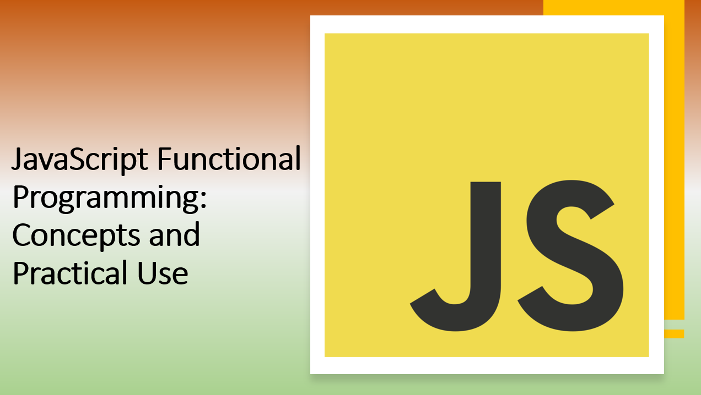

Introduction​
Functional programming is a paradigm that focuses on treating computation as the evaluation of mathematical functions. In the context of JavaScript, embracing functional programming principles can lead to more maintainable, predictable, and modular code.
In this guide, we'll explore the core concepts of functional programming and demonstrate how to apply them practically in your JavaScript projects.
Suggested Tutorials 📑:​
What is Functional Programming?​
Functional programming is a programming paradigm that treats computation as the evaluation of mathematical functions and avoids changing-state and mutable data.
Functional programming is a declarative programming paradigm, meaning that the program logic is expressed without explicitly describing the flow control.
1. Pure Functions​
A pure function is a function that has the following properties:
- Its return value is the same for the same arguments (no variation with local static variables, non-local variables, mutable reference arguments or input streams).
- Its evaluation has no side effects (no mutation of local static variables, non-local variables, mutable reference arguments or input/output streams).
Pure functions are the cornerstone of functional programming. They are the building blocks of functional programming.
The following code snippet demonstrates a pure function:
let total = 0;
function addToTotal(number) {
total += number;
}
function add(a, b) {
return a + b;
}
2. Immutability​
Immutability is a core concept of functional programming. It means that once a value is assigned to a variable, it cannot be changed.
In JavaScript, primitive values are immutable. For example, the following code snippet demonstrates that the value of the variable a cannot be changed:
const originalArray = [1, 2, 3];
const newArray = [...originalArray, 4];
3. Higher-Order Functions​
Higher-order functions are functions that take other functions as arguments or return functions as their results.
The following code snippet demonstrates a higher-order function:
function higherOrderFunction(callback) {
callback();
}
function callback() {
console.log('Hello, World!');
}
higherOrderFunction(callback);
4. Function Composition​
Function composition is the process of combining two or more functions to produce a new function or perform some computation.
The following code snippet demonstrates function composition:
const add = (a, b) => a + b;
const multiply = (a, b) => a * b;
const addAndMultiply = (a, b, c) => multiply(add(a, b), c);
addAndMultiply(1, 2, 3);
Suggested Tutorials 📑:​
5. Recursion​
Recursion is a technique for iterating over an operation by having a function call itself repeatedly until it arrives at a result. Most loops can be rewritten in a recursive style, and in some functional languages this approach to looping is the default.
The following code snippet demonstrates recursion:
function factorial(n) {
if (n === 0) {
return 1;
}
return n * factorial(n - 1);
}
factorial(5);
6. Referential Transparency​
Referential transparency is a property of pure functions. It states that a function call can be replaced by its resulting value without changing the behavior of the program.
The following code snippet demonstrates referential transparency:
function add(a, b) {
return a + b;
}
const x = add(1, 2);
const y = 3;
x === y;
7. Currying​
Currying is the process of taking a function with multiple arguments and returning a series of functions that take one argument and eventually resolve to a value.
The following code snippet demonstrates currying:
function add(a) {
return function (b) {
return a + b;
};
}
add(1)(2);
8. Partial Application​
Partial application is the process of taking a function with multiple arguments and returning a function with fewer arguments.
The following code snippet demonstrates partial application:
function add(a, b) {
return a + b;
}
const addOne = add.bind(null, 1);
addOne(2);
Suggested Tutorials 📑:​
9. Function Pipelines​
Function pipelines are a technique for organizing complex computations by breaking them into multiple functions that can be chained together.
The following code snippet demonstrates function pipelines:
const add = (a, b) => a + b;
const multiply = (a, b) => a * b;
const addAndMultiply = (a, b, c) => multiply(add(a, b), c);
addAndMultiply(1, 2, 3);
10. Function Chaining​
Function chaining is a technique for calling multiple functions on the same object in sequence.
The following code snippet demonstrates function chaining:
const array = [1, 2, 3];
array
.map((x) => x * 2)
.filter((x) => x > 2)
.reduce((sum, x) => sum + x);
11. Lazy Evaluation​
Lazy evaluation is a technique for delaying the evaluation of an expression until its value is needed.
The following code snippet demonstrates lazy evaluation:
function lazyFilter(array, predicate) {
return function* () {
for (const x of array) {
if (predicate(x)) {
yield x;
}
}
};
}
const array = [1, 2, 3];
const filteredArray = lazyFilter(array, (x) => x > 2);
for (const x of filteredArray()) {
console.log(x);
}
Another common scenario for lazy evaluation is with Promises, where you can chain asynchronous operations without actually executing them until explicitly requested:
function fetchData() {
return new Promise(resolve => {
setTimeout(() => {
console.log("Fetching data...");
resolve("Data has been fetched");
}, 1000);
});
}
const dataPromise = fetchData();
dataPromise.then(data => {
console.log(data);
});
Suggested Tutorials 📑:​
Conclusion​
In this guide, we explored the core concepts of functional programming and demonstrated how to apply them practically in your JavaScript projects.
Functional programming is a paradigm that focuses on treating computation as the evaluation of mathematical functions. In the context of JavaScript, embracing functional programming principles can lead to more maintainable, predictable, and modular code.
We hope you found this guide useful.
Happy coding! 🎉